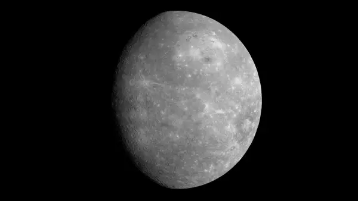
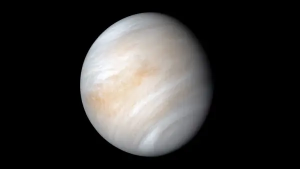
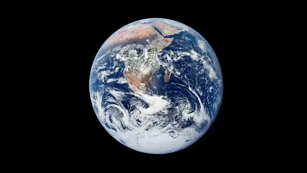
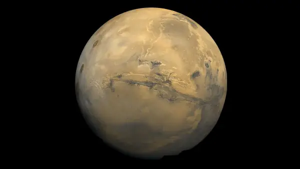
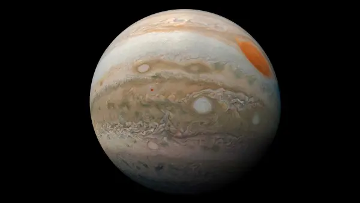
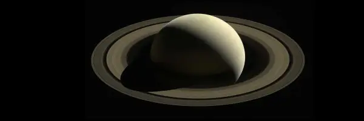
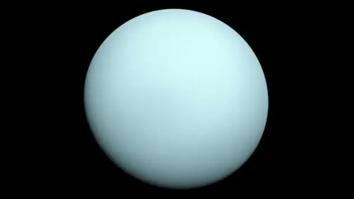
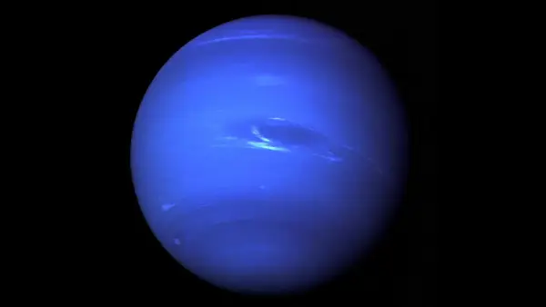

-
Mercúrio

Mercúrio é o planeta mais próximo do Sol e também um dos menores do Sistema Solar. Não possui satélites naturais e apresenta temperaturas extremas.
-
Vênus

Vênus é semelhante à Terra em tamanho, mas possui uma atmosfera densa e extremamente quente. É o planeta mais brilhante no céu depois da Lua.
-
Terra

A Terra é o único planeta conhecido que abriga vida. Possui um satélite natural, a Lua, e sua atmosfera protege a superfície de radiações solares nocivas.
-
Marte

Conhecido como "planeta vermelho", Marte possui duas pequenas luas e é um dos principais alvos de missões espaciais devido à possibilidade de abrigar vida passada.
-
Júpiter

Júpiter é o maior planeta do Sistema Solar. Possui dezenas de luas e um sistema de anéis pouco visível. Sua atmosfera é composta majoritariamente por hidrogênio e hélio.
-
Saturno

Saturno é conhecido por seus belos anéis formados por gelo e rochas. É o segundo maior planeta e possui mais de 80 luas conhecidas.
-
Urano

Urano é um gigante gasoso com coloração azulada. Gira de lado em relação ao plano de sua órbita, o que o torna único entre os planetas.
-
Netuno

Netuno é o planeta mais distante do Sol. Possui ventos fortíssimos e uma coloração azul intensa devido ao gás metano em sua atmosfera.